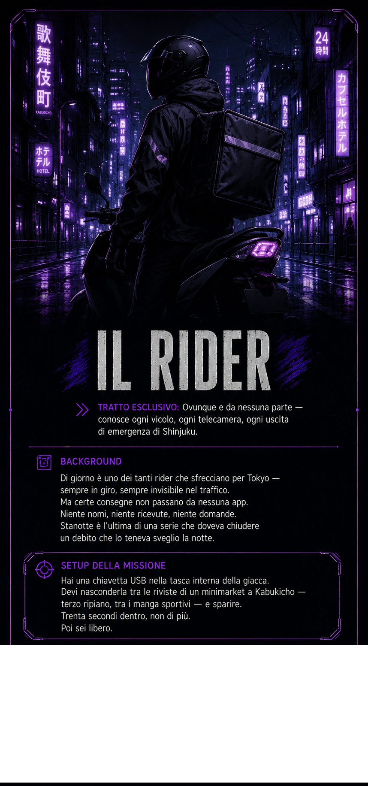

Colonna sonora — また同じ夜に, Keiko Kurosawa
Shinjuku, ottobre 2025. Sono le 23:31. Hai una chiavetta in tasca e trenta secondi di lavoro davanti a te.
Apri ChatGPT (o un'altra chat AI)
Incolla il testo copiato
Premi invio — la partita inizia